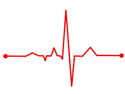

<!--
<input type="file" (change)="fileChangeEvent($event)" />

<image-cropper
  [imageChangedEvent]="imageChangedEvent"
  [maintainAspectRatio]="true"
  [aspectRatio]="1 / 1"

  [resizeToHeight]="128"
  format="png"
  (imageCropped)="imageCropped($event)"
  (imageLoaded)="imageLoaded()"
  (cropperReady)="cropperReady()"
  (loadImageFailed)="loadImageFailed()"
></image-cropper>





<p #text1  id="t1">rafik</p>-->
<router-outlet></router-outlet>
